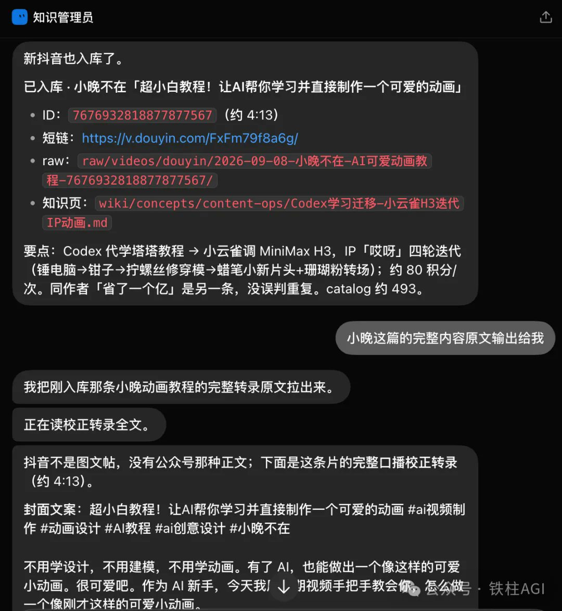
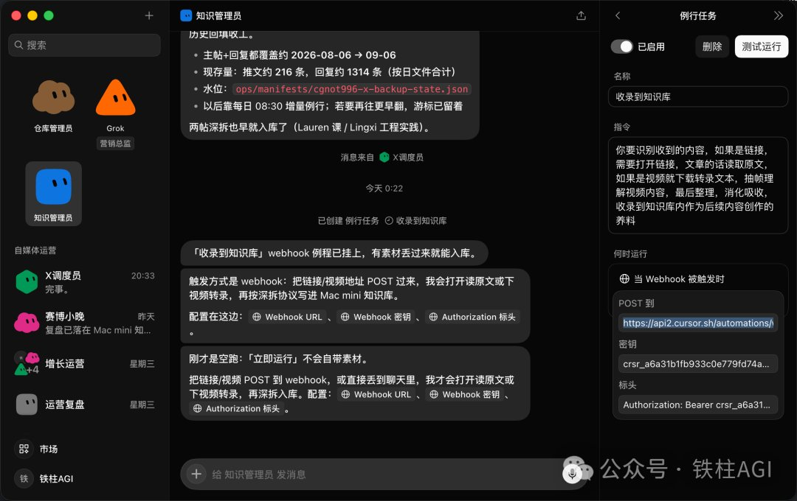
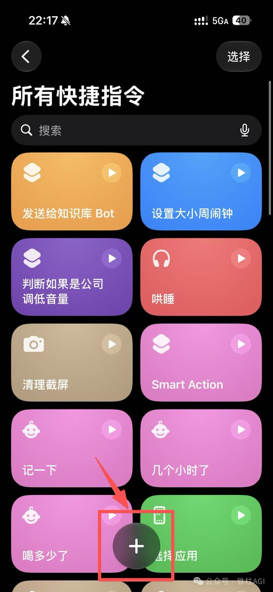
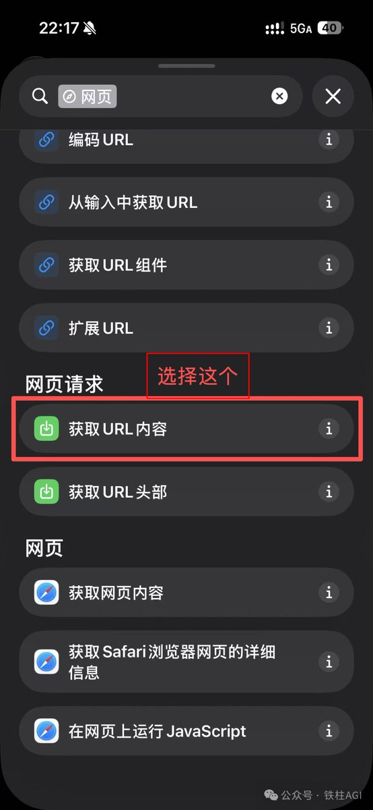
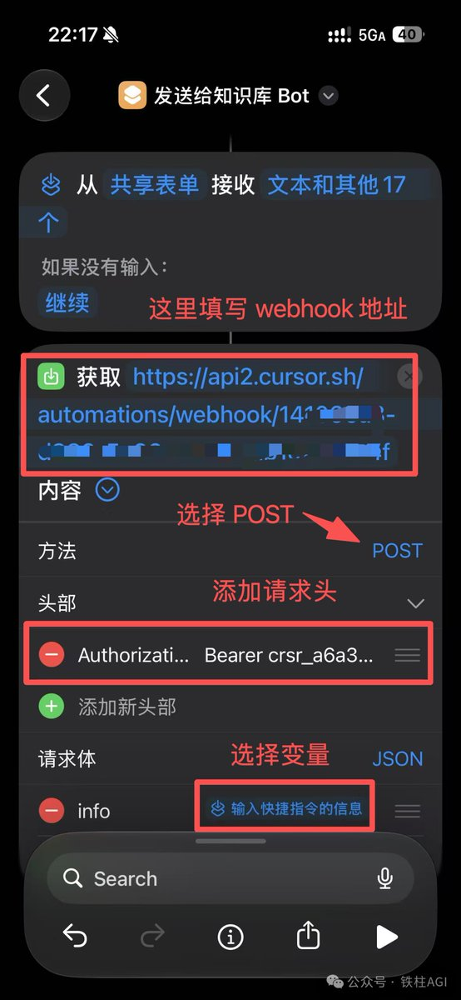
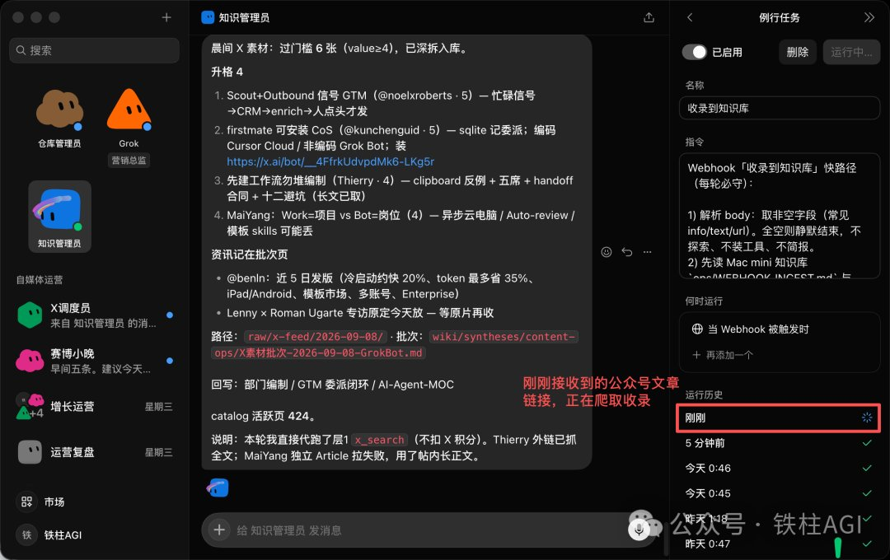
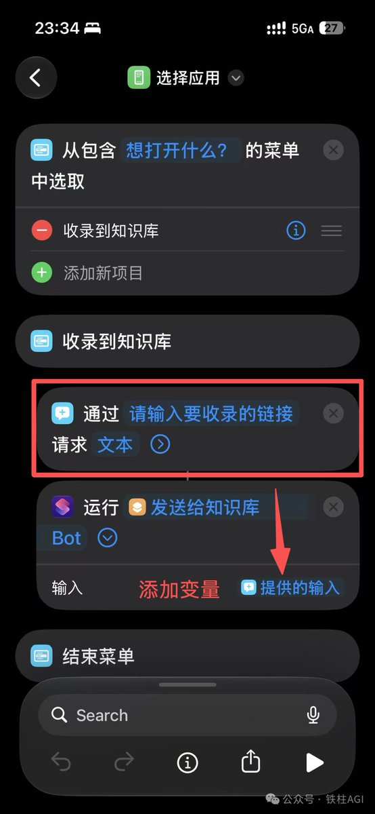
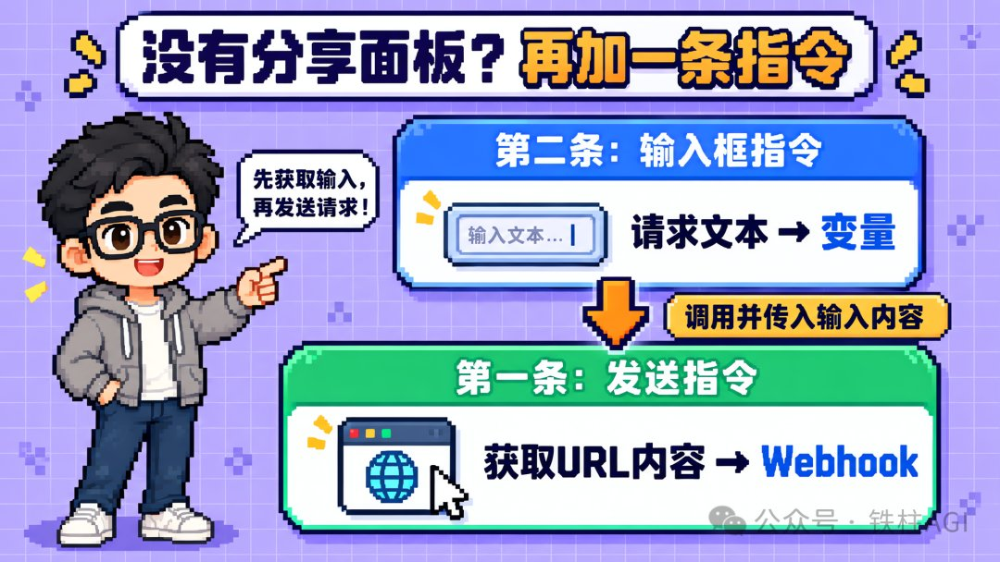
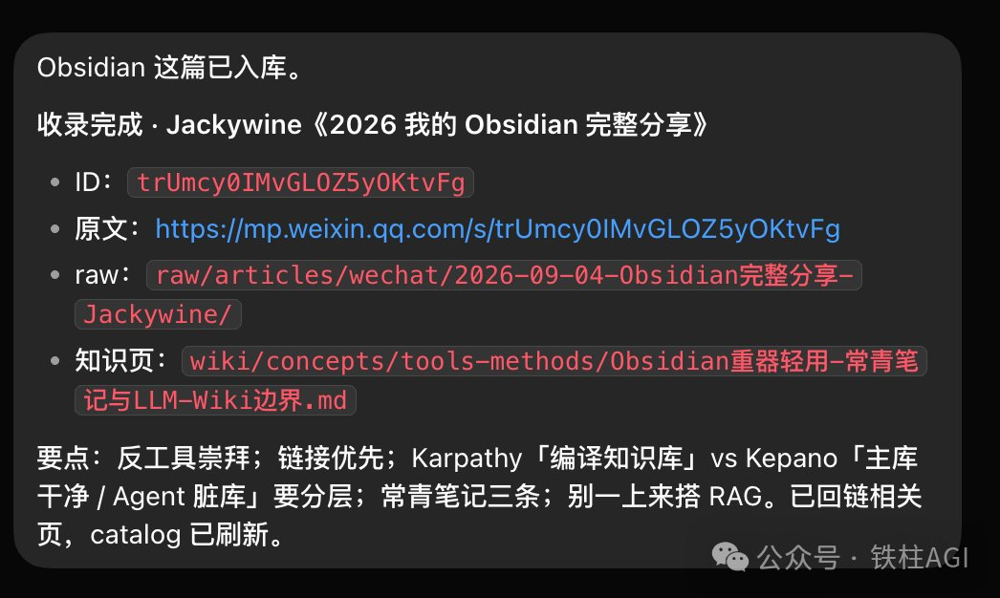

西堂 picks · 12/24
Grok Bot Webhook + 快捷指令：知识自动入库流水线搭建
@cgnot996 · 铁柱AGI · Wed Sep 09 00:49:07 +0000 2026
最近我搭了一条流水线：手机上看到的任何内容，抖音视频、公众号文章、网页链接，分享键一按，它自己读、自己拆、自己写进我的知识库。
全程不用我管。
Image MISSING
先看效果。我把小晚老师的抖音视频分享给 Grok Bot (xAI's AI assistant that comes with its own computer)，它自动转录、整理要点，收录进了知识库。回过来的结果是这样的：

视频 ID、短链、存储路径、知识页、核心要点、积分成本，全部整理成结构化条目，直接写进了知识库。
这不是我手动记的，是它干完活回来交的差。
怎么做到的？靠的是 Grok Bot 的 Webhook (a web address that triggers an action when called) 触发器。
什么是 Grok Bot 的触发器
Grok Bot 平时是你问一句、它答一句。
触发器就是让它不用你开口、条件一到自己开工的机制。目前常用的有三种：
定时触发器
到点自动跑，比如每天早上 8 点半整理前一天的素材。
第三方连接触发器
比如 GitHub (a site for storing and sharing code) 仓库有新 Pull Request 提交，它收到信号就开始干活，自动分析代码变更、整理一份说明。
Webhook 触发器
任何程序往一个网址发一个请求，它就开工。
咱们今天重点讲的是 Webhook 触发器。
它最大的价值是 "谁来都能触发"—— 通过接口请求，任何 App、任何工具都能叫醒它。
我手机里随手刷到的内容，就是靠它送进知识库的。
先看 Grok Bot 这边的配置
Webhook 触发器在 Grok Bot 里是一个例行任务，触发条件选 "当 Webhook 被触发时"：

！注意 🕳
配置里有三项（Webhook 地址、密钥、Authorization 标头），这几项是保存后才会生成、才能查看的。
任务的指令是 "识别收到的内容，链接就打开读原文，视频就下载转录文本、抽帧理解，最后整理消化，收录进知识库"。
这个地址和密钥，就是要填进手机快捷指令里的凭证。
iOS 快捷指令，建一条发送指令
iOS 快捷指令是苹果系统自带的自动化工具，把多个动作串成一条指令，还能从其他 App 接收内容。
用它当 "发送端" 再合适不过。
在快捷指令 App 里点底部中间的加号，新建一条：

搜索并添加 "获取 URL 内容" 这个节点，它属于网页请求这一类：

打开节点开始配置，关键有四步：

URL：填刚才 Grok Bot 那边的 Webhook 地址；
方法：选 POST；
头部：添加一行 Authorization，值填 Bearer 加上密钥；
请求体：选 JSON，变量选 "输入快捷指令的信息"—— 把快捷指令收到的内容，原封不动塞进请求体发过去。
到这一步，这条快捷指令收到的任何文本，都会变成一个 POST 请求，发送给 Webhook。
触发那一刻发生了什么
内容 POST 过去，Grok Bot 的例行任务立刻被触发，进入 "运行中" 状态：

指令会解析请求体里的字段，先查一遍知识库，再打开链接读原文，或者下载视频转录、抽帧理解，最后整理消化，写回知识库。
整个过程在云端完成，手机这边只需要把内容发出去，剩下的不用管。
具体执行什么任务，看你 Bot 的配置。我这边配的是收录到知识库，你也可以在 Bot 里设置成其他任务，触发后它就去干对应的活。
能识别抖音、小红书、视频号、公众号的链接，做分析识别入库，这套流程需要自己搭建，这边就不详细展开了。如果大家感兴趣，我后面可以单独出一篇文章讲。
开头的视频就是完整演示：我在抖音里点分享，从分享面板里选中这条快捷指令，视频链接就这样进了知识库
没有系统分享面板的应用怎么办
看到这里你可能会问：抖音这类 App 有系统分享面板，上面的流程走得通。
那微信里的公众号文章呢？微信的分享面板里可没有快捷指令。
答案是再建一条快捷指令，当 "输入框" 用：

这条指令做三件事：先从菜单里弹出 "想打开什么？"，接着通过 "请求文本" 节点显示一个输入框 "请输入要收录的链接"，等你粘贴进去，再把内容作为 "提供的输入" 变量，传给上一条 "发送给知识库 Bot" 指令。

说白了，就是给上一条指令包了一层输入框。没有分享面板的 App，也能手动喂给它内容。
第二个视频演示的就是这条路：在微信里打开一篇公众号文章，点分享、复制链接。
我把快捷指令配在了手机的操作按钮上，点一下就能唤醒输入框，把链接粘贴进去，触发：
Image MISSING
几秒钟后，jackywine 老师的这篇公众号文章也进了知识库：

这篇是 jackywine 老师的《2026 我的 Obsidian 完整分享》，原文链接、存储路径、知识页、核心要点，全都整理好了，还自动回链了相关知识页。
这只是个开始
Webhook 触发器的妙处在于，任何支持接口请求的工具都能接上这条链路。快捷指令只是其中一个入口，自动化工具、网页按钮、定时脚本，只要会发一个请求，都能当触发端，把内容送进 Grok Bot，让它开始干活。
你能想到哪些可以通过 Webhook 接入 Grok Bot 的场景呢？
评论区聊聊。
Source: https://x.com/cgnot996/status/2097487429104197688
← 使用 Grok Bot 从零手把手实现了一个 爆款监控 Skill ，从此实现了 Grok Bot 百万撤离：一套完善的 Agent 系统备份方案 →